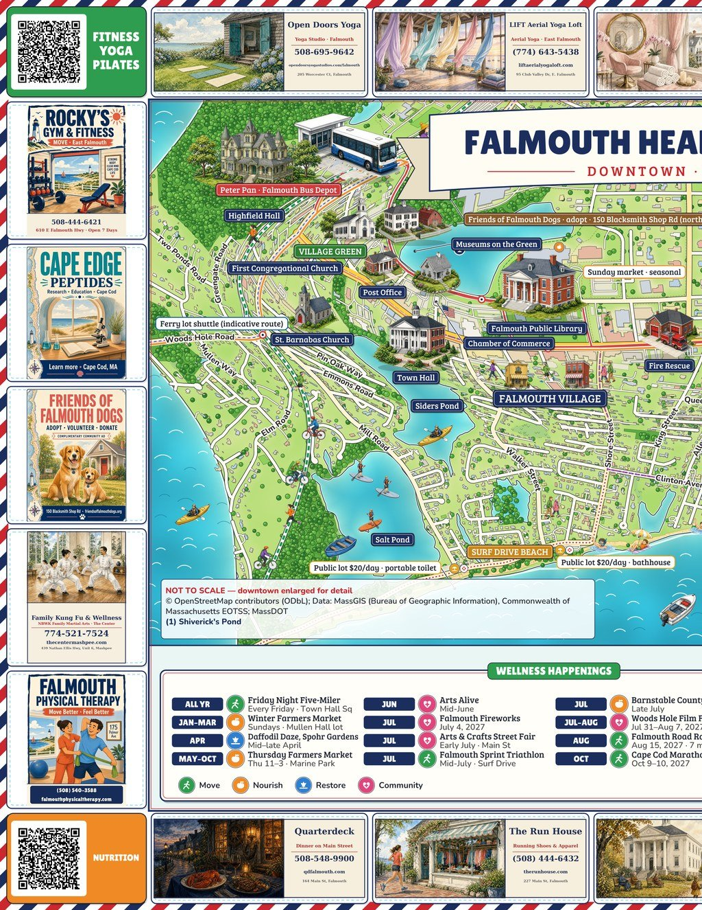
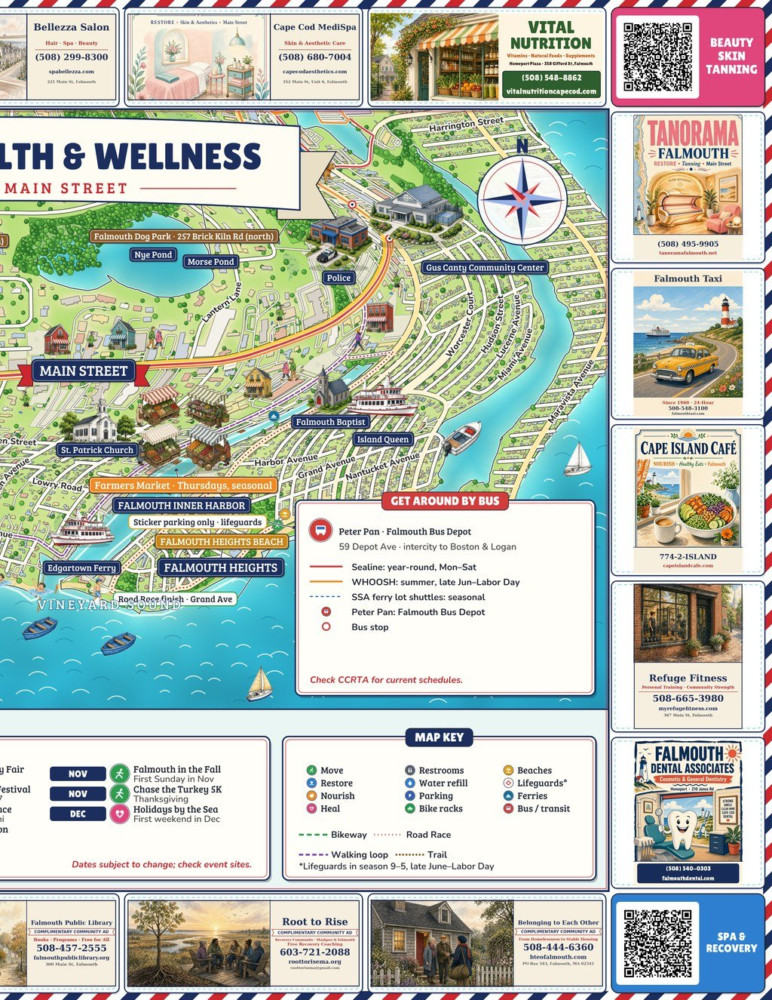
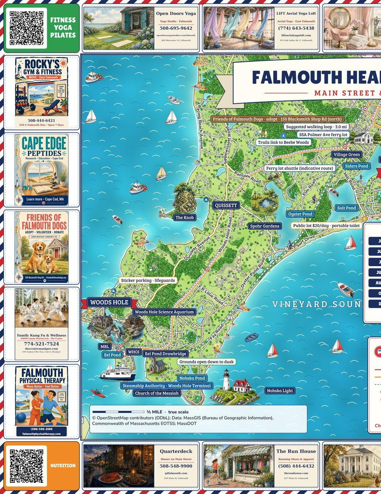
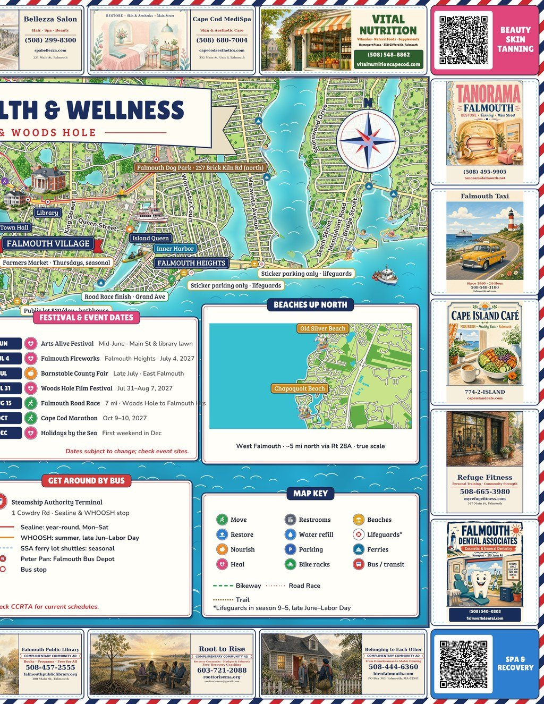

The Falmouth Magazine
Flip through it like the real thing — the map, the directory, arts, pets, visionaries and local partners.
Local
Wellness
Maps

Good dogs, good neighbors — inside Friends of Falmouth Dogs & the Brick Kiln dog park
Where will the new police station go? The site question, explained
Inside
- Good Dogs, Good Neighbors 2–4
- Healthy Aging at 780 Main 5–6
- Family Business: Cape Island Café 7–8
- Centerfold: Downtown map 9–10
- Civic: The Police Station Question 11
- Finders: What’s New 12
- Map side 2: Main St to Woods Hole 13–14
- Word Friends beta · Puzzles 15
- Fall Quarter News Desk 16
- Arts · VR · Partners 17–19
📱 Turn your phone sideways to read it as an open book — the map opens as a two-page centerfold. Sample issue; drafts from public sources, updated late Oct 2026.
Good Dogs, Good Neighbors
Local Wellness Maps staff · Sample feature
Down a wooded road off Route 28, a volunteer-built shelter has spent decades making sure Falmouth’s strays find a couch of their own.
Ask anyone in town where a lost dog ends up, and you will probably hear the same answer: Blacksmith Shop Road. That is home to Friends of Falmouth Dogs, the nonprofit started by residents who wanted the town’s stray and surrendered dogs rehomed rather than forgotten. It runs on donations, fundraisers and a steady crew of volunteers who walk, feed, socialize and — the best part — say goodbye when a dog goes home.
The work doesn’t stop at the kennel door. Through the Senior Center’s resource list, Friends of Falmouth Dogs also points residents to help with medical assistance for veterinary care and a food-for-your-dog program, so a tight month doesn’t mean giving up a companion.
A park built for play
Once a dog is home, it needs somewhere to run. The Falmouth Dog Park at 257 Brick Kiln Road in East Falmouth was created to be welcoming, safe and environmentally sensitive. It is free, handicap-accessible, and has a separate time-out/acclimation area for nervous newcomers. There’s even an emergency horn in a red box on the fence — one quick blast gives owners a moment to separate dogs.
A tired dog is a happy dog — and a dog park is where a lot of Falmouth neighbors first learn each other’s names (usually the dog’s first).
For many families, the park is half exercise, half social hour. Regulars trade vet tips and trail recommendations, and newcomers get a crash course in local dog culture.
Park hours posted by the park group: dawn to 8 pm. Animal Control: 508-457-2552.
Adopt, foster, volunteer
150 Blacksmith Shop Rd, Falmouth
508-548-7742 · friendsoffalmouthdogs.org
Visiting hours vary — call ahead.
- Adopt: meet the current dogs on the shelter’s site, then book a visit.
- Volunteer: walkers and socializers are always welcome.
- Donate: food, blankets, toys and funds keep the lights on.
- Need help? Ask about vet-care and dog-food assistance.
Dog parks and pet stops are now marked on the Local Wellness Map.
Adoptable pets & lost/found →Sources: Friends of Falmouth Dogs, falmouthdogpark.com, Falmouth Senior Services newsletter (Sept 2026).
Healthy Aging at 780 Main
Sample feature · details from the Town of Falmouth
The Falmouth Senior Center is less a place to sit than a place to move, learn and play.
Run by the town’s Senior Services Department (Council on Aging), the center at 780 Main Street serves every Falmouth resident 60 and older with health services, referrals, education and recreation — with a stated emphasis on healthy aging and quality of life.
Look at the fall calendar and it reads like a gym schedule: Chair Yoga, Gentle Yoga, Mat Pilates, Chair Qigong, Line Dancing, Osteocise, Sit & Get Fit, Men of Steel. The VNA of Cape Cod runs free programs too, including neuro-focused exercise and aquatic conditioning.
On the calendar
- Mon Oct 5, 10:30 am — Coffee with the Police Chief: Police Station Building Working Group update.
- Mon Oct 19, 10:30 am — Veterans’ SITREP with Veterans’ Services Director Jim Gouzias. Drop in.
- Mon Oct 19, 2 pm — Medicare Open Enrollment: What You Need to Know for 2027 (SHINE). Pre-register.
- Mon Nov 2, 10:30 am — Coffee with the Chief: scams & community engagement.
- Mon Nov 2, 2 pm — RMV “Driving Decision” workshop on older-driver safety. Pre-register.
- Book Club with Falmouth Public Library librarians — current pick The Lincoln Lawyer. Drop in.
- Every week: Sit & Get Fit, Sculpt & Stretch, Cardio Aerobic Strength, bridge, cribbage, Scrabble, Friday Puzzle Time.
Source: Senior Happenings, Sept/Oct 2026 (falmouthma.gov). Call to confirm.
Cape Island Café
SAMPLE FEATURE — for illustration until interview
On Gifford Street, a neighborhood café is betting that “healthy” and “homemade” can be the same thing.
Cape Island Café at 316 Gifford St is one of the stops on our downtown map: coffee in the morning, healthy eats and lunch made local. It is the kind of place where regulars are known by order before name.
This space is reserved for the family’s own story — who started it, who’s behind the counter now, and what they cook at home. We will fill it in their words after our interview.
What we’ll ask
- How did the café start, and who in the family runs what?
- What’s the dish regulars can’t live without?
- How do they source local on the Cape?
- What does “wellness” mean at a lunch counter?
[Owner quote — to be added after interview]
316 Gifford St, Falmouth
Phone, hours & menu — to confirm
Run a family business in Falmouth? We’d love to feature you next issue.

Downtown Falmouth · centerfold
Scan a corner QR · full map →The Police Station Question
Falmouth still plans a new police station. Where it goes is open again.
The Select Board picked 100 Brick Kiln Road in 2025, and Town Meeting approved $5.15M in Nov 2025 for design and project management (Tecton Architects; OPM Vertex).
On Oct 2, 2026 outside counsel (Anderson & Kreiger) concluded the parcel, bought in 2003 partly with Land Bank funds, is likely protected under Article 97 — using it would need a two-thirds Town Meeting vote, a two-thirds vote of the Legislature, and replacement land.
On Oct 9 the board voted unanimously to release the opinion and said staff should prioritize finding another site. Tecton is updating costs for alternative sites (incl. flat ~5-acre parcels) and 1–2 year delays. About 35% of the design money had been spent; board members noted much of the design could carry over. The planned sewer lift station on the same parcel is also under review.
Sources: Town legal opinion; The Enterprise, Oct 2026. No construction has started.
What’s New on the Map
- Homeport additions: Vital Nutrition (358 Gifford St) and Falmouth Dental Associates (210 Jones Rd).
- Corner QRs are live: scan a map corner for Fitness · Yoga · Pilates, Beauty · Skin · Tanning, Nutrition, or Spa · Recovery.
- Dog parks on the map: Falmouth Dog Park, plus pet resources on our Pets page.
- Free at the Art Center: galleries, opening receptions and the Art Feedback Group, now listed.
- Senior Center programs added to the directory.

Main St to Woods Hole · centerfold
Scan a corner QR · full map →Word Friends BETA
Our own town word game — build words on a board, score bonus points for Falmouth words like HARBOR, BEACH and WOODS.
- Play solo or pass-and-play on one phone.
- Invite a friend by text or email — they tap the link and the game opens ready to play.
- Your game saves on your device.
Word Friends is an independent Local Wellness Maps game, not affiliated with Words With Friends or Zynga.
Fall 2026 Quarter
- Police station: Article 97 opinion; board prioritizes a new site.
- Senior Center: Medicare open enrollment, Driving Decision, Veterans’ SITREP.
- Art Center: free galleries, next reception Nov 6.
- Library-led Senior Center Book Club.
- Friends of Falmouth Dogs & the Brick Kiln Rd dog park.
- Local Wellness Maps launch: corner QRs live.
🎙 Podcast (coming): a quarterly Falmouth roundup built from these sources.
Full news desk with sources →Arts Center & Artist Corner
Falmouth Art Center · 137 Gifford St · 508-540-3304. Free galleries, monthly receptions (next Nov 6, 4–6 pm), drop-in Art Feedback Group; classes for all ages.
Classes & updates →Artist Corner: we photograph local artists’ work — 3D spin views coming.
Visit →VR & Visionaries
VR Explore: walk the trails and climb to the lighthouse — captured by local mappers. Step into VR shops too.
Enter VR →Visionaries: the people shaping wellness, food and community in Falmouth.
Meet them →Our Local Partners
Cape Island Café — 316 Gifford St. Healthy eats, coffee, lunch.
Root to Rise — community wellness & recovery support.
Falmouth Taxi — rides to every spot on the map. Getting around →
Be in Issue 02
Border ads, business pages and magazine spreads.
hello@localwellnessmaps.com (coming)Local
Wellness
Maps
localwellnessmaps · Falmouth